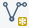
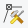
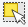

Classification in R
We want to utilize a Random Forest (RF) and a Support Vector Classifier (SVM) algorithm in order to classify the Berlin land cover in six elementary categories: bare soil, water, grassland, forest, urban low density, and urban high density. Therefore, we need an image dataset and a shapefile containing points or polygons to which the respective class is attributed.
The workflow will be exemplified by a L8 scene (ID: LC08_L1TP_193023_20170602_20170615_01_T1), which you may already have acquired during the L8 Download Exercise. You need to preprocess the scene as shown in chapter Preprocess. In addition, we narrowed our research area to Berlin to keep the data small (as shown in chapter Visualize in R).
You can download both the preprocessed image and the shapefile for testing purposes here.
This section guides you through a complete classification process for satellite imagery. The resulting classification maps will be validated in the next chapter.
Sample in QGIS – some basic considerations and tips for sampling
– collect training polygons in QGIS for supervised classification
Prepare Samples in R – import training polygons into R
– use training polygons to extract raster information
– put everything together in a data frame
RF Classification – train a RF model with “randomForest” package
– classify image data and export a classification image
SVM Classification – train a SVM (C-Classification method) with “e1071” package
– classify image data and export a classification image
Sample in QGIS
This section provide a guide on how to create training areas in the form of polygons, which we save in a shapefile in QGIS. The process is very similar to collecting samples in ArcGIS/ ArcMAP, which you already know from our GIS seminars.
Collecting training areas is essential when working with supervised classifiers and significantly influences the classification outputs. You should make some preliminary considerations and approach the sampling very carefully! In the following, we will focus on the most important basics to consider.
Preliminary thoughts about sampling
Probably the most frequently asked questions are how many polygons should be created by class and and how big should they be?
– Good questions!
Unfortunately, those just can not be answered directly. The amount of training data you need, i.e., polygon count and size, depends both on the
- complexity of your classification problem (number and similarity of target classes, …) &
- complexity of your classification algorithm (number of parameters or weights, RF, SVM, ANN, ML, …).
Sampling data in machine learning is a science in itself, which is why there is a wealth of scientific publications about it (Curran & Williamson 1986, Figueroa et al. 2012) and even entire books (Marchetti et al. 2006, Hastie et al. 2017).
Fine, so far that is not much of a help…
To keep it very simple: You need a sample of your data that representatively describes the problem you want to solve. Keep in mind, a classifier learns a mathematical function, which maps input data (e.g., spectral bands) to output data (e.g., class labels). In order to achieve this, you should provide enough training data to capture the relationships between input and output. Training data will optimally meet the following requirements:
- independent of test data:
A training dataset must be independent of the test dataset used for a validation, but can follow the same probability distribution. No training sample may be used to test (validate) the performance of the classifier! In the context of remote sensing data, it is also important that train and test data are spatially maximally distant to avoid spatial autocorrelation (Morans I). - mostly identical distributed:
Each target class should be equally represented in the training data set. Most datasets do not have an exactly equal number of instances in each class. Small differences often does not matter. However, if there is a strong imbalance, e.g., 90% of all training data represent class 1 and only 10% class 2, most algorithms very quickly overclassify the more-prevalent classes. Some simple options here: Collect more samples of the low-represented classes, use data augmentation to synthetically create new samples for under-represented classes, or use a under sampling method. The simplest under sampling method is to delete samples from the over-represented classes during classifier training. We will use this latter method for the RF and SVM implementations later on. - representative for target classes:
Training data should cover as many intra-class variations as possible, e.g., all spectral classes of a thematic target class, such as deciduous trees and conifers for the target class “forest”. Especially with more complex, non-linear classifiers, such as RF and SVM, it is important to include near-border training samples to map the class transitions more accurately. For example, water bodies should also be sampled in the shore area rather than just creating polygons in deep water areas. - available in sufficient quantity:
There are statistical heuristic methods available to calculate a suitable sample size. Often a factor of the number of classes, the number of input features or the model parameters are used (e.g., 5 features – 25 training samples per class, Theodoridis et al. 2008) or the minimum number of samples necessary to perform the power calculation is searched (Dell et al. 2002). However, these rules are not universally applicable! Anyway, if you have many features, e.g., hundreds of spectral channels in hyperspectral images, it is important to collect even more samples to avoid the curse of dimensionality, i.e., Hughes phenomenon (Hughes 1968). This curse occurs when the samples can not reflect the possible parameter combinations in such a high dimensional feature space. As a result, the classification accuracy decreases as more features are included in the algorithm. The best way to find out if the training samples are sufficiently set is to plot a learning curve. A learning curve plots the model performance on the y-axis versus the size of the training dataset on the x-axis as a line. On this way, you may be able to evaluate the amount of data that is required for a solid model performance, or perhaps how little data you actually need before before the learning curve stagnates or even drops again. This plot can be generated during training, as shown in the next sections.
Before you start sampling the training data in QGIS, here are some general tips for digitizing your polygons, if you want to perform a monotemporal classification based on spectral features:
- evenly distribute the polygons for each class over the entire scene to best cover any atmospheric variations that may exist within the image
- for each class, try to digitize an area of approximately the same size (sum of all polygons)
- keep in mind: each raster pixel under your polygons is a training sample!
- avoid huge polygons(!), e.g., creating a huge polygon over a homogeneous lake does not add much value in terms of characterization of the spectral properties of a lake. – create several small polygons covering different lakes instead
- take your time! Sampling is an essential processing step and will largely determine your further analysis
Enough theory, time to collect training data.
Import a Raster Dataset
The training polygons should define relevant areas for the differentiation of the desired target classes (bare soil, water, grassland, forest, urban low density, and urban high density in our example). To know where these surfaces are located, we need corresponding image data as a basis. So let us import an image dataset!
First of all, open QGIS.
There are several ways to open a raster dataset here: Either navigate via the main menu to Layer > Add Layer > Add Raster Layer…, or press the corresponding icon  in the toolbar or press the shortcut Ctrl + Shift + R to open a file explorer window.
in the toolbar or press the shortcut Ctrl + Shift + R to open a file explorer window.

Location of Add Raster Layer-function in QGIS
In the file explorer window, navigate to the data folder which holds your L8 data and import a raster dataset. We will use a L8 scene showing Berlin (ID: LC08_L1TP_193023_20170602_20170615_01_T1) from the L8 Download Exercise. The spatial subset can be downloaded here directly:
{kind=link}
Landsat 8 spatial subset imported into QGIS
If you have started a new QGIS project (or just opened QGIS), the projection of the entire project will be based on the first dataset you load – in this case the raster file. You can see the current projection of the project in the lower right corner of QGIS. If you use our example data set, you should now see  there. Click on this entry to get more detailed information about coordinate system of our raster dataset (“WGS84 / UTM ZONE 33 N”). Alternatively you can double-click the dataset in the Layer Panel and view the Coordinate Reference System (CRS) in the General-tab. We want to generate a new shapefile, which shares exactly this georeference system. This is the best way to ensure that the polygons are geographically correctly located in the end.
there. Click on this entry to get more detailed information about coordinate system of our raster dataset (“WGS84 / UTM ZONE 33 N”). Alternatively you can double-click the dataset in the Layer Panel and view the Coordinate Reference System (CRS) in the General-tab. We want to generate a new shapefile, which shares exactly this georeference system. This is the best way to ensure that the polygons are geographically correctly located in the end.
Create a New Polygon Shapefile
First, navigate to the area of interest (AOI) in your image data. Then click on the New Shapfile Layer  icon in the toolbar. If you can not find this icon, right-click in the toolbar area and make sure there is a check mark next to “Manage Layer Toolbar”, which should reveal this icon among others. Once clicked, the “New Shapefile Layer” dialog will be displayed. Choose “polygon” as the Type in the top row of the window. Click on the Coordinate System icon. A new window will pup up, allowing you the choose the CRS of your new shapefile. Choose the same CRS as your raster data (you can use the filter function at the top). On the Fields list, select “id”, and click the button  at the bottom of the list. Under “New field”, type “classes” in the Name box, click on
at the bottom of the list. Under “New field”, type “classes” in the Name box, click on  . Finally, this should look like this:
. Finally, this should look like this:
{kind=link}
New Shapefile dialog settings
If everything is set up, click OK. You will be prompted to the “Save layer as…” dialog. Type the file name (“training_data.shp”), choose a file path and click Save. You will be able to see the new shapefile in the Layers Panel of QGIS. Select it and press the Toggle Editing  icon in order to activate editing functionalities. Note that a little pencil symbol will show up on top of the layer, indicating that the layer is now editable. Now click on the Add Feature icon. The mouse cursor will now look like a crosshairs. Left-click on the map in the Map View to create the first point of your new feature. Keep on left-clicking for each additional point you wish to include in your polygon. When you have finished adding your points, right-click anywhere on the map area to confirm your polygon geometry. An attribute window will appear immediately, asking for your class label. Input the appropriate class label for your polygon and click OK. Click on the Toggle Editing
icon in order to activate editing functionalities. Note that a little pencil symbol will show up on top of the layer, indicating that the layer is now editable. Now click on the Add Feature icon. The mouse cursor will now look like a crosshairs. Left-click on the map in the Map View to create the first point of your new feature. Keep on left-clicking for each additional point you wish to include in your polygon. When you have finished adding your points, right-click anywhere on the map area to confirm your polygon geometry. An attribute window will appear immediately, asking for your class label. Input the appropriate class label for your polygon and click OK. Click on the Toggle Editing  icon again in order to end editing and to save your changes by choosing Save.
icon again in order to end editing and to save your changes by choosing Save.
You can edit the shape of a polygon with the Node tool . Delete any unwanted polygons by clicking on the tool called “Select Features by Area or Single Click” . Once activated you can left-click on polygons you want to delete, causing them to turn yellow. Then, press the delete key on your keyboard to remove the polygons (only in editing mode). Choose “Categorized” in the uppermost drop-down menu.
After some time you should have collected some training areas:

Collection of training polygons in one shapefile
You can also color the polygons during editing based on the “classes” attribute, which makes it easier for you to estimate the class distribution. Double-click the shapefile in the Layers Panel and navigate to the Style tab. Ensure that your attribute “classes” is selected in the drop-down menu below. Click Classify once to apply an individual color to each class (click on the colored boxes in order to change the colors) and confirm everything by pressing OK:

Style settings for coloring classes
If you think you have collected enough samples, save everything by clicking on the Toggle Editing icon again and choose to Save.
We do not need QGIS anymore, so close it.
Prepare Samples in R
We want to put the training samples created in the previous section in the form of a data frame – which most classifiers in R can handle easily (especially our RF and SVM algorithms). You can download the training_data shapefile here. For this task, we again take advantage of the powerful raster package. The complete code is shown below and a more detailed description is given afterwards.
# import raster package
library(raster)
# import image (img) and shapefile (shp)
setwd("/media/sf_exchange/landsatdata/")
img <- brick("LC081930232017060201T1-SC20180613160412_subset.tif")
shp <- shapefile("training_data.shp")
# extract samples with class labels and put them all together in a dataframe
names(img) <- c("b1", "b2", "b3", "b4", "b5", "b6", "b7")
smp <- extract(img, shp, df = TRUE)
smp$cl <- as.factor( shp$classes[ match(smp$ID, seq(nrow(shp)) ) ] )
smp <- smp[-1]
In-depth Guide
In order to use functionalities of the raster package, load it into your current session via library(). If you do not use our VM, you must first download and install the packages with install.packages():
#install.packages("raster")
library(raster)Next: set your working directory, in which all your image and shapefile data is stored by giving a character (do not forget the quotation marks ” ”) variable to setwd(). Check your path with getwd() and the stored files in it via dir():
setwd("/media/sf_exchange/landsatdata/")
getwd()
## [1] "/media/sf_exchange/landsatdata"
dir()
## [1] "LC081930232017060201T1-SC20180613160412_subset.tif"
## [2] "polygons_training.dbf"
## [3] "polygons_training.prj"
## [4] "polygons_training.qpj"
## [5] "polygons_training.shp"
## [6] "polygons_training.shx" If you do not get your files listed, you have made a mistake in your work path – check again! Everything ready to go? Fine, then import your raster file as img and your shapefile as shp and have a look at them:
img <- brick("LC081930232017060201T1-SC20180613160412_subset.tif")
img
## class : RasterBrick
## dimensions : 504, 1030, 519120, 7 (nrow, ncol, ncell, nlayers)
## resolution : 30, 30 (x, y)
## extent : 369795, 400695, 5812395, 5827515 (xmin, xmax, ymin, ymax)
## coord. ref. : +proj=utm +zone=33 +datum=WGS84 +units=m +no_defs +ellps=WGS84 +towgs84=0,0,0
## data source : /media/sf_exchange/landsatdata/LC081930232017060201T1-SC20180613160412_subset.tif
## names : LC0819302//2_subset.1, LC0819302//2_subset.2, LC0819302//2_subset.3, LC0819302//2_subset.4, LC0819302//2_subset.5, LC0819302//2_subset.6, LC0819302//2_subset.7
## min values : -2000, -2000, -1502, -1384, -107, -72, -27
## max values : 13240, 13539, 14574, 14549, 14243, 14896, 15388
shp <- shapefile("training_data.shp")
shp
## class : SpatialPolygonsDataFrame
## features : 72
## extent : 369802.9, 400028.9, 5812457, 5827504 (xmin, xmax, ymin, ymax)
## coord. ref. : +proj=utm +zone=33 +datum=WGS84 +units=m +no_defs +ellps=WGS84 +towgs84=0,0,0
## variables : 1
## names : classes
## min values : baresoil
## max values : water
compareCRS(shp, img)
## [1] TRUEBoth the brick() and shapefile() functions are provided by the raster package. As shown above, they create objects of the class RasterBrick and SpatialPolygonsDataFrame respectively. The L8 raster provides 7 bands, and our example shapefile 72 features, i.e., polygons. You can check whether the projections of the two datasets are identical or not by executing compareCRS(shp, img). If this is not the case (output equals FALSE), the raster package will automatically re-project your data on the fly later on. However, we recommend to adjust the projections manually in advance to prevent any future inaccuracies.
Plot your data to make sure everything is imported properly (check Visualize in R for an intro to plotting). With the argument add = TRUE in line 2 several data layers can be displayed one above the other:
plotRGB(img, r = 4, g = 3, b = 2, stretch = "lin")
plot(shp, col="red", add=TRUE)
If you followed this course in the previous section, your shapefile should provide an attribute called “classes”, which includes your target classes as strings, e.g., “water” or “urban”. We will later turn this column into the factor data type because classifiers can only work with integer values instead of words like “water” or “urban”. When converting to factors, strings are sorted alphabetically and numbered consecutively. In order to be able to read the classification image at the end, you should make a note of your classification key:
levels(as.factor(shp$classes))
## [1] "baresoil" "forest" "grassland" "urban_hd" "urban_ld" "water"
for (i in 1:length(unique(shp$classes))) {cat(paste0(i, " ", levels(as.factor(shp$classes))[i]), sep="\n")}
## 1 baresoil
## 2 forest
## 3 grassland
## 4 urban_hd
## 5 urban_ld
## 6 waterThe levels() function combines all occurrences in a factor-formatted vector. In the example shown above, value 1 in our classification image will correspond to the baresoil class, value 2 to forest, value 3 to grassland, etc.
Optional: Let us take a look at the naming of the raster bands via the names() function. Those names can be quite bulky and cause problems in some illustrations when used as axis labels. You can easily rename it to something more concise by overriding the names with any string vector of the same length:
names(img)
## [1] "LC081930232017060201T1.SC20180613160412_subset.1"
## [2] "LC081930232017060201T1.SC20180613160412_subset.2"
## [3] "LC081930232017060201T1.SC20180613160412_subset.3"
## [4] "LC081930232017060201T1.SC20180613160412_subset.4"
## [5] "LC081930232017060201T1.SC20180613160412_subset.5"
## [6] "LC081930232017060201T1.SC20180613160412_subset.6"
## [7] "LC081930232017060201T1.SC20180613160412_subset.7"
names(img) <- c("b1", "b2", "b3", "b4", "b5", "b6", "b7")
names(img)
## [1] "b1" "b2" "b3" "b4" "b5" "b6" "b7"Appropriate names for the input features are very helpful for orientation and readability. Of course you need to change the vector in line 10 according to your own input features.
Our goal is to extract the raster values (x), i.e., all input feature values, and the class values (y) of every single pixel within our training polygons and put all together in a data frame. This data frame can then be read by our classifier. We extract the raster values using the command extract() from the raster package. The argument df = TRUE guarantees that the output is a data frame:
smp <- extract(img, shp, df = TRUE)It may take some (long) time for this function to complete depending on the spatial resolution of your raster data and the spatial area covered by your polygons. If you have your data stored on an SSD, the process is completed much faster. It may be advisable to save the resulting object to the hard drive save(smp , file = “smp .rda”) and load it from the hard disk if necessary load(file = “smp.rda”). On this way, the extract function does not have to be repeated again and again…
The data frame has as many rows as pixels could be extracted and as many columns as input features are given (in this example the spectral channels). In addition, smp also provides a column named “ID”, which holds the IDs of the former polygon for each pixel (each polygon is automatically assigned an ID). Furthermore, we also know which polygon, i.e., each ID, belongs to which class. Because of this, we can establish a relationship between the deposited ID of each pixel and the class using the match() function. We use this to add another column to our data query describing each class. Then we delete the ID column because we do not need it anymore:
smp$cl <- as.factor(shp$classes[match(smp$ID, seq(nrow(shp)))])
smp <- smp[-1]
summary(smp$cl)
## baresoil forest grassland urban_hd urban_ld water
## 719 2074 1226 1284 969 763
str(smp)
## 'data.frame': 7035 obs. of 8 variables:
## $ b1: num 192 179 189 159 171 164 173 184 144 150 ...
## $ b2: num 229 203 221 179 194 188 192 208 166 165 ...
## $ b3: num 321 233 272 188 203 196 208 254 178 177 ...
## $ b4: num 204 130 164 97 116 108 119 150 83 80 ...
## $ b5: num 161 156 173 125 146 138 146 166 107 104 ...
## $ b6: num 100 93 109 63 82 71 82 104 51 46 ...
## $ b7: num 72 68 81 40 56 51 59 74 32 30 ...
## $ cl: Factor w/ 6 levels "baresoil","forest",..: 6 6 6 6 6 6 6 6 6 6 ...Now you are ready to start training your classifier as described in the next sections!
Optional: If you only include spectral information in your classifier, as in our example, it is often helpful to plot the so-called spectral profiles, or z-profiles. Those represent the mean values of each class for the individual spectral bands. You can also represent other features, e.g., terrain height or precipitation, however, you must then pay attention to the value range in the presentation and possibly normalize the data at first. The magic here happens in the aggregate() command, which combines all the rows of the same class . ~ cl and calculates the arithmetic mean of those groups FUN = mean. This happens for all classes, in the cl column, where NA values are to be ignored via na.rm = TRUE. The rest of the functions in the following script are for visualization purposes only and include standard functions such as plot(), lines(), grid() and legend(). Use the help function for a detailed description of the arguments!
sp <- aggregate( . ~ cl, data = smp, FUN = mean, na.rm = TRUE )
# plot empty plot of a defined size
plot(0,
ylim = c(min(sp[2:ncol(sp)]), max(sp[2:ncol(sp)])),
xlim = c(1, ncol(smp)-1),
type = 'n',
xlab = "L8 bands",
ylab = "reflectance [% * 100]"
)
# define colors for class representation - one color per class necessary!
mycolors <- c("#fbf793", "#006601", "#bfe578", "#d00000", "#fa6700", "#6569ff")
# draw one line for each class
for (i in 1:nrow(sp)){
lines(as.numeric(sp[i, -1]),
lwd = 4,
col = mycolors[i]
)
}
# add a grid
grid()
# add a legend
legend(as.character(sp$cl),
x = "topleft",
col = mycolors,
lwd = 5,
bty = "n"
)
Note that the values represent only the arithmetic mean of the classes and do not allow any statement about the underlying distribution. However, such a z-profile plot helps to visually assess the separability of classes at the beginning.